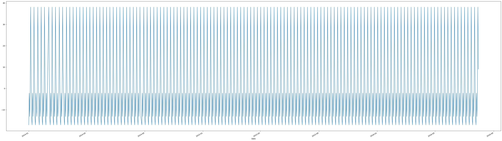

#visualisation of our other variables
data['Stock'].plot(figsize = (15,5), legend = True)<Axes: xlabel='Date'>
# Load packages
import numpy as np # linear algebra
import pandas as pd
#importing necessary libraries before we proceed
import numpy as np
import pandas as pd
import matplotlib.pyplot as plt
import seaborn as sb
%matplotlib inline
# read csv file
data = pd.read_csv("mock_kaggle.csv")
data| data | venda | estoque | preco | |
|---|---|---|---|---|
| 0 | 2014-01-01 | 0 | 4972 | 1.29 |
| 1 | 2014-01-02 | 70 | 4902 | 1.29 |
| 2 | 2014-01-03 | 59 | 4843 | 1.29 |
| 3 | 2014-01-04 | 93 | 4750 | 1.29 |
| 4 | 2014-01-05 | 96 | 4654 | 1.29 |
| ... | ... | ... | ... | ... |
| 932 | 2016-07-27 | 98 | 3179 | 2.39 |
| 933 | 2016-07-28 | 108 | 3071 | 2.39 |
| 934 | 2016-07-29 | 128 | 4095 | 2.39 |
| 935 | 2016-07-30 | 270 | 3825 | 2.39 |
| 936 | 2016-07-31 | 183 | 3642 | 2.39 |
937 rows × 4 columns
#check first few observations
data.head()| data | venda | estoque | preco | |
|---|---|---|---|---|
| 0 | 2014-01-01 | 0 | 4972 | 1.29 |
| 1 | 2014-01-02 | 70 | 4902 | 1.29 |
| 2 | 2014-01-03 | 59 | 4843 | 1.29 |
| 3 | 2014-01-04 | 93 | 4750 | 1.29 |
| 4 | 2014-01-05 | 96 | 4654 | 1.29 |
#check last few observations
data.tail()| data | venda | estoque | preco | |
|---|---|---|---|---|
| 932 | 2016-07-27 | 98 | 3179 | 2.39 |
| 933 | 2016-07-28 | 108 | 3071 | 2.39 |
| 934 | 2016-07-29 | 128 | 4095 | 2.39 |
| 935 | 2016-07-30 | 270 | 3825 | 2.39 |
| 936 | 2016-07-31 | 183 | 3642 | 2.39 |
#to understand the data types, null values if any
data.info()<class 'pandas.core.frame.DataFrame'>
RangeIndex: 937 entries, 0 to 936
Data columns (total 4 columns):
# Column Non-Null Count Dtype
--- ------ -------------- -----
0 data 937 non-null object
1 venda 937 non-null int64
2 estoque 937 non-null int64
3 preco 937 non-null float64
dtypes: float64(1), int64(2), object(1)
memory usage: 29.4+ KB
#1. Dataset has 4 variables that are time dependent with 937 observations
#2. Dataset has venda(sales), estoque(stock) and preco(price) details (in portugese)
#3. Dataset has sales as target variable
#4. Date is in string format#rename columns from Portugese to English
data = data.rename(columns = {'data':'Date',
'venda': 'Sales',
'estoque': 'Stock',
'preco': 'Price'}
)data.head()| Date | Sales | Stock | Price | |
|---|---|---|---|---|
| 0 | 2014-01-01 | 0 | 4972 | 1.29 |
| 1 | 2014-01-02 | 70 | 4902 | 1.29 |
| 2 | 2014-01-03 | 59 | 4843 | 1.29 |
| 3 | 2014-01-04 | 93 | 4750 | 1.29 |
| 4 | 2014-01-05 | 96 | 4654 | 1.29 |
#to check missing values
data.isnull().sum()Date 0
Sales 0
Stock 0
Price 0
dtype: int64#to convert string format to date format
data['Date'] = pd.to_datetime(data['Date'])#adding columns/features
data['Day'] = data['Date'].dt.day
data['Month'] = data['Date'].dt.month
data['Year'] = data['Date'].dt.year
data['Revenue'] = data['Sales'] * data['Price'] # Adding revenue aswelldata.info()<class 'pandas.core.frame.DataFrame'>
RangeIndex: 937 entries, 0 to 936
Data columns (total 8 columns):
# Column Non-Null Count Dtype
--- ------ -------------- -----
0 Date 937 non-null datetime64[ns]
1 Sales 937 non-null int64
2 Stock 937 non-null int64
3 Price 937 non-null float64
4 Day 937 non-null int32
5 Month 937 non-null int32
6 Year 937 non-null int32
7 Revenue 937 non-null float64
dtypes: datetime64[ns](1), float64(2), int32(3), int64(2)
memory usage: 47.7 KB
#set date as index
data.set_index('Date', inplace=True)#visualisation of our target variable
data['Sales'].plot(figsize = (15,5), legend = True)<Axes: xlabel='Date'>#visualisation of our other variables
data['Stock'].plot(figsize = (15,5), legend = True)<Axes: xlabel='Date'>
data['Price'].plot(figsize = (15,5), legend = True)<Axes: xlabel='Date'>data['Revenue'].plot(figsize = (15,5), legend = True)<Axes: xlabel='Date'>#plot acf and pacf plots
from statsmodels.graphics.tsaplots import plot_acf, plot_pacfplot_acf(data['Sales'], lags = 30, title='Autocorrelation for Sales', zero=False, auto_ylims=True)
plt.show()
#ACF plot shows significant 10 lags 
ACF (Autocorrelation Function) and PACF (Partial Autocorrelation Function) are statistical tools commonly used in time series analysis and forecasting. They help identify the underlying patterns and correlations in the data, specifically the dependence of a variable on its past values.
By examining the ACF and PACF plots, data analysts can identify the appropriate orders of AR and MA terms in time series forecasting models, such as the ARIMA (AutoRegressive Integrated Moving Average) model. These plots provide insights into the overall dependence structure of the time series data and help guide the selection of model parameters to achieve accurate and reliable forecasts.
plot_pacf(data['Sales'], lags = 30, title='Partial Autocorrelation for Sales', zero=False, auto_ylims=True)
plt.show()
#PACF plot shows significant 1 lag
#to check stationarity in the data
import statsmodels.tsa.stattools as stsADF STAT: The more negative the ADF statistic, the stronger the evidence for rejecting the null hypothesis of non-stationarity.
If the ADF statistic is significantly less than critical values at a chosen significance level (e.g., 5%), it suggests that the data is stationary.
P-VALUE: It represents the probability of obtaining the observed ADF statistic if the null hypothesis of non-stationarity is true. A lower p-value
indicates stronger evidence against the null hypothesis. Typically, if the p-value is less than a chosen significance level (e.g., 0.05), the null
hypothesis of non-stationarity is rejected in favor of stationarity.
critical value: If the ADF statistic is more negative (i.e., farther from zero) than the critical values, it provides evidence for rejecting the null hypothesis.
ADF Statistic: -2.584
p-value: 0.096
Critical values (1%): -3.431
Critical values (5%): -2.862
Critical values (10%): -2.567
Interpretation:
The ADF statistic is -2.584, which is more negative than the critical values at all significance levels (1%, 5%, and 10%). This suggests evidence for stationarity.
Additionally, the p-value is 0.096, which is greater than the significance level of 0.05. While it does not provide strong evidence against non-stationarity,
when combined with the ADF statistic, it supports the conclusion of stationarity. Therefore, based on these results, we can consider the data to be stationary.
sts.adfuller(data['Sales'])
#sales is stationary (p-value<0.05). but it has some seasonality(-5.326902281189405,
4.815089201365774e-06,
14,
922,
{'1%': -3.437462363899248,
'5%': -2.8646798473884134,
'10%': -2.568441851017076},
10080.058794702525)sts.adfuller(data['Stock'])
#stock is stationary (p-value<0.05)(-4.432775258132062,
0.0002596009817819147,
1,
935,
{'1%': -3.437363201927513,
'5%': -2.864636122077874,
'10%': -2.5684185607252137},
13320.64266001144)sts.adfuller(data['Price'])
#data is stationary (p-value<0.05)(-4.5854371741841495,
0.00013739285676424819,
2,
934,
{'1%': -3.4373707314972766,
'5%': -2.8646394422797337,
'10%': -2.5684203292233905},
-90.17618431524147)sts.adfuller(data['Revenue'])
#data is stationary (p-value<0.05)(-2.91320865437751,
0.043833430309161016,
21,
915,
{'1%': -3.437516929214992,
'5%': -2.86470390726455,
'10%': -2.5684546666069457},
10894.08755939725)#To understand seasonality in detail. Let's try Seasonal decomposition
from statsmodels.tsa.seasonal import seasonal_decomposesd_sales = seasonal_decompose(data['Sales'], model='additive', period = 7)
sd_sales.plot()
plt.show()sd_sales.trend.plot(figsize = (40,15)) #there is no indicative trend or pattern<Axes: xlabel='Date'>sd_sales.seasonal.plot(figsize = (50,15)) #there is seasonality<Axes: xlabel='Date'>
There is seasonality but no trend
#to check correlation (if there is correlation we may have to opt for a different model)
data[['Sales', 'Stock', 'Price']].corr()| Sales | Stock | Price | |
|---|---|---|---|
| Sales | 1.000000 | 0.153659 | 0.094779 |
| Stock | 0.153659 | 1.000000 | -0.032604 |
| Price | 0.094779 | -0.032604 | 1.000000 |
Since there is no correlation between we can go for simple model
We have 2 approaches to this: 1. difference the data (due to seasonality) and model (ARMA, Holt Winters) 2.
without differencing go for more robust models (like XGBoosting)
#First Approach :
#as we have seasonality (non-stationary) data needs to be converted/flattened.
data['Sales_Shift'] = data['Sales'].shift(periods = 1)
#here period is 1 as we are taking one previous valuedata.head( )| Sales | Stock | Price | Day | Month | Year | Revenue | Sales_Shift | |
|---|---|---|---|---|---|---|---|---|
| Date | ||||||||
| 2014-01-01 | 0 | 4972 | 1.29 | 1 | 1 | 2014 | 0.00 | NaN |
| 2014-01-02 | 70 | 4902 | 1.29 | 2 | 1 | 2014 | 90.30 | 0.0 |
| 2014-01-03 | 59 | 4843 | 1.29 | 3 | 1 | 2014 | 76.11 | 70.0 |
| 2014-01-04 | 93 | 4750 | 1.29 | 4 | 1 | 2014 | 119.97 | 59.0 |
| 2014-01-05 | 96 | 4654 | 1.29 | 5 | 1 | 2014 | 123.84 | 93.0 |
#differencing method (subtract Sales from Sales_shift)
data['diff'] = data['Sales']-data['Sales_Shift']data['diff'].plot()
#now the data is stationary <Axes: xlabel='Date'>data.head()| Sales | Stock | Price | Day | Month | Year | Revenue | Sales_Shift | diff | |
|---|---|---|---|---|---|---|---|---|---|
| Date | |||||||||
| 2014-01-01 | 0 | 4972 | 1.29 | 1 | 1 | 2014 | 0.00 | NaN | NaN |
| 2014-01-02 | 70 | 4902 | 1.29 | 2 | 1 | 2014 | 90.30 | 0.0 | 70.0 |
| 2014-01-03 | 59 | 4843 | 1.29 | 3 | 1 | 2014 | 76.11 | 70.0 | -11.0 |
| 2014-01-04 | 93 | 4750 | 1.29 | 4 | 1 | 2014 | 119.97 | 59.0 | 34.0 |
| 2014-01-05 | 96 | 4654 | 1.29 | 5 | 1 | 2014 | 123.84 | 93.0 | 3.0 |
#since first value in diff is NaN we should exlude this while modelling or finding correlations
data1 = data[1:]#split the data into train and test
size = int(len(data1)*0.70)
#splitting the first 70% data zto train and the rest to test
train_data = data1[:size]
train_data.tail()| Sales | Stock | Price | Day | Month | Year | Revenue | Sales_Shift | diff | |
|---|---|---|---|---|---|---|---|---|---|
| Date | |||||||||
| 2015-10-20 | 93 | 1198 | 1.78 | 20 | 10 | 2015 | 165.54 | 120.0 | -27.0 |
| 2015-10-21 | 100 | 1096 | 1.78 | 21 | 10 | 2015 | 178.00 | 93.0 | 7.0 |
| 2015-10-22 | 137 | 1055 | 1.27 | 22 | 10 | 2015 | 173.99 | 100.0 | 37.0 |
| 2015-10-23 | 241 | 1006 | 1.27 | 23 | 10 | 2015 | 306.07 | 137.0 | 104.0 |
| 2015-10-24 | 113 | 893 | 1.27 | 24 | 10 | 2015 | 143.51 | 241.0 | -128.0 |
test_data = data1[size:]
test_data.head()| Sales | Stock | Price | Day | Month | Year | Revenue | Sales_Shift | diff | |
|---|---|---|---|---|---|---|---|---|---|
| Date | |||||||||
| 2015-10-25 | 257 | 636 | 1.28 | 25 | 10 | 2015 | 328.96 | 113.0 | 144.0 |
| 2015-10-26 | 166 | 474 | 1.28 | 26 | 10 | 2015 | 212.48 | 257.0 | -91.0 |
| 2015-10-27 | 162 | 312 | 1.28 | 27 | 10 | 2015 | 207.36 | 166.0 | -4.0 |
| 2015-10-28 | 247 | 1121 | 1.28 | 28 | 10 | 2015 | 316.16 | 162.0 | 85.0 |
| 2015-10-29 | 70 | 1435 | 1.78 | 29 | 10 | 2015 | 124.60 | 247.0 | -177.0 |
To determine the appropriate ARIMA order values for your time series analysis, you can follow these steps:
Visualize the Time Series Data: Plot the time series data and examine its patterns, trends, and seasonality. This will help you gain insights into the data and determine if any transformations or differencing may be necessary.
Stationarity: Check the stationarity of the time series. Stationarity is a key assumption for ARIMA models. You can use statistical tests like the Augmented Dickey-Fuller (ADF) test or visually inspect the data for constant mean and variance over time. If the data is not stationary, you may need to apply differencing to make it stationary.
Autocorrelation and Partial Autocorrelation Analysis: Examine the autocorrelation and partial autocorrelation plots (ACF and PACF) of the differenced time series data. These plots can provide insights into the possible values for the order of the AR (autoregressive) and MA (moving average) components of the ARIMA model.
Based on the ACF and PACF plots, you can identify potential values for p (AR order) and q (MA order) respectively.
Determine the Integration Order (d): If differencing was applied to achieve stationarity, the differencing order (d) is determined by the number of times differencing was required. If the data was stationary from the beginning, d would be 0.
Try Different ARIMA Models: Based on the information gathered from steps 3 and 4, you can now try different combinations of AR, MA, and differencing orders to build different ARIMA models. Fit these models to your data and evaluate their performance using appropriate evaluation metrics such as AIC (Akaike Information Criterion) or BIC (Bayesian Information Criterion).
Select the Best Model: Choose the ARIMA model with the lowest AIC or BIC value, indicating the best trade-off between goodness of fit and model complexity.
Check Residuals: Once you have selected the best ARIMA model, examine the residuals to ensure they are normally distributed and do not exhibit any remaining patterns or significant autocorrelation. If necessary, you may need to iterate and refine your model selection.
By following these steps, you can determine the appropriate ARIMA order values for your time series analysis and build an effective forecasting model. Keep in mind that the selection process may require some experimentation and domain expertise to achieve the best results.
#AR model
from statsmodels.tsa.arima.model import ARIMA
ar_model = ARIMA(train_data['diff'], order = (6, 0, 0))
ar_model_results = ar_model.fit()
ar_model_results.summary()/Library/Frameworks/Python.framework/Versions/3.11/lib/python3.11/site-packages/statsmodels/tsa/base/tsa_model.py:473: ValueWarning: A date index has been provided, but it has no associated frequency information and so will be ignored when e.g. forecasting.
self._init_dates(dates, freq)
/Library/Frameworks/Python.framework/Versions/3.11/lib/python3.11/site-packages/statsmodels/tsa/base/tsa_model.py:473: ValueWarning: A date index has been provided, but it has no associated frequency information and so will be ignored when e.g. forecasting.
self._init_dates(dates, freq)
/Library/Frameworks/Python.framework/Versions/3.11/lib/python3.11/site-packages/statsmodels/tsa/base/tsa_model.py:473: ValueWarning: A date index has been provided, but it has no associated frequency information and so will be ignored when e.g. forecasting.
self._init_dates(dates, freq)
| Dep. Variable: | diff | No. Observations: | 655 |
|---|---|---|---|
| Model: | ARIMA(6, 0, 0) | Log Likelihood | -3594.354 |
| Date: | Mon, 12 Jun 2023 | AIC | 7204.709 |
| Time: | 05:56:17 | BIC | 7240.586 |
| Sample: | 0 | HQIC | 7218.620 |
| - 655 | |||
| Covariance Type: | opg |
| coef | std err | z | P>|z| | [0.025 | 0.975] | |
|---|---|---|---|---|---|---|
| const | 0.1134 | 1.033 | 0.110 | 0.913 | -1.911 | 2.138 |
| ar.L1 | -0.3672 | 0.027 | -13.775 | 0.000 | -0.419 | -0.315 |
| ar.L2 | -0.3597 | 0.030 | -11.965 | 0.000 | -0.419 | -0.301 |
| ar.L3 | -0.2750 | 0.039 | -7.035 | 0.000 | -0.352 | -0.198 |
| ar.L4 | -0.2365 | 0.039 | -6.067 | 0.000 | -0.313 | -0.160 |
| ar.L5 | -0.2239 | 0.036 | -6.180 | 0.000 | -0.295 | -0.153 |
| ar.L6 | -0.1242 | 0.035 | -3.600 | 0.000 | -0.192 | -0.057 |
| sigma2 | 3421.5550 | 102.983 | 33.224 | 0.000 | 3219.712 | 3623.398 |
| Ljung-Box (L1) (Q): | 0.00 | Jarque-Bera (JB): | 1491.36 |
|---|---|---|---|
| Prob(Q): | 0.96 | Prob(JB): | 0.00 |
| Heteroskedasticity (H): | 1.61 | Skew: | 1.06 |
| Prob(H) (two-sided): | 0.00 | Kurtosis: | 10.08 |
#MA model
ma_model = ARIMA(train_data['diff'], order = (0, 0, 5))
ma_model_results = ma_model.fit()
ma_model_results.summary()/Library/Frameworks/Python.framework/Versions/3.11/lib/python3.11/site-packages/statsmodels/tsa/base/tsa_model.py:473: ValueWarning: A date index has been provided, but it has no associated frequency information and so will be ignored when e.g. forecasting.
self._init_dates(dates, freq)
/Library/Frameworks/Python.framework/Versions/3.11/lib/python3.11/site-packages/statsmodels/tsa/base/tsa_model.py:473: ValueWarning: A date index has been provided, but it has no associated frequency information and so will be ignored when e.g. forecasting.
self._init_dates(dates, freq)
/Library/Frameworks/Python.framework/Versions/3.11/lib/python3.11/site-packages/statsmodels/tsa/base/tsa_model.py:473: ValueWarning: A date index has been provided, but it has no associated frequency information and so will be ignored when e.g. forecasting.
self._init_dates(dates, freq)
| Dep. Variable: | diff | No. Observations: | 655 |
|---|---|---|---|
| Model: | ARIMA(0, 0, 5) | Log Likelihood | -3581.890 |
| Date: | Mon, 12 Jun 2023 | AIC | 7177.780 |
| Time: | 06:26:01 | BIC | 7209.173 |
| Sample: | 0 | HQIC | 7189.952 |
| - 655 | |||
| Covariance Type: | opg |
| coef | std err | z | P>|z| | [0.025 | 0.975] | |
|---|---|---|---|---|---|---|
| const | -0.0060 | 0.087 | -0.069 | 0.945 | -0.177 | 0.165 |
| ma.L1 | -0.4163 | 0.030 | -13.896 | 0.000 | -0.475 | -0.358 |
| ma.L2 | -0.2653 | 0.035 | -7.653 | 0.000 | -0.333 | -0.197 |
| ma.L3 | -0.1045 | 0.045 | -2.321 | 0.020 | -0.193 | -0.016 |
| ma.L4 | -0.0900 | 0.043 | -2.112 | 0.035 | -0.174 | -0.007 |
| ma.L5 | -0.0981 | 0.037 | -2.622 | 0.009 | -0.172 | -0.025 |
| sigma2 | 3278.6073 | 95.619 | 34.288 | 0.000 | 3091.198 | 3466.017 |
| Ljung-Box (L1) (Q): | 0.00 | Jarque-Bera (JB): | 2061.49 |
|---|---|---|---|
| Prob(Q): | 0.97 | Prob(JB): | 0.00 |
| Heteroskedasticity (H): | 1.67 | Skew: | 1.61 |
| Prob(H) (two-sided): | 0.00 | Kurtosis: | 11.07 |
#ARMA model
arma_model = ARIMA(train_data['diff'], order = (1, 0, 1))
arma_model_results = arma_model.fit()
arma_model_results.summary()/Library/Frameworks/Python.framework/Versions/3.11/lib/python3.11/site-packages/statsmodels/tsa/base/tsa_model.py:473: ValueWarning: A date index has been provided, but it has no associated frequency information and so will be ignored when e.g. forecasting.
self._init_dates(dates, freq)
/Library/Frameworks/Python.framework/Versions/3.11/lib/python3.11/site-packages/statsmodels/tsa/base/tsa_model.py:473: ValueWarning: A date index has been provided, but it has no associated frequency information and so will be ignored when e.g. forecasting.
self._init_dates(dates, freq)
/Library/Frameworks/Python.framework/Versions/3.11/lib/python3.11/site-packages/statsmodels/tsa/base/tsa_model.py:473: ValueWarning: A date index has been provided, but it has no associated frequency information and so will be ignored when e.g. forecasting.
self._init_dates(dates, freq)
| Dep. Variable: | diff | No. Observations: | 655 |
|---|---|---|---|
| Model: | ARIMA(1, 0, 1) | Log Likelihood | -3581.809 |
| Date: | Mon, 12 Jun 2023 | AIC | 7171.618 |
| Time: | 06:27:14 | BIC | 7189.556 |
| Sample: | 0 | HQIC | 7178.573 |
| - 655 | |||
| Covariance Type: | opg |
| coef | std err | z | P>|z| | [0.025 | 0.975] | |
|---|---|---|---|---|---|---|
| const | 0.0020 | 0.042 | 0.048 | 0.962 | -0.081 | 0.085 |
| ar.L1 | 0.5787 | 0.027 | 21.392 | 0.000 | 0.526 | 0.632 |
| ma.L1 | -0.9966 | 0.010 | -100.311 | 0.000 | -1.016 | -0.977 |
| sigma2 | 3274.2356 | 98.172 | 33.352 | 0.000 | 3081.821 | 3466.650 |
| Ljung-Box (L1) (Q): | 0.01 | Jarque-Bera (JB): | 2205.15 |
|---|---|---|---|
| Prob(Q): | 0.91 | Prob(JB): | 0.00 |
| Heteroskedasticity (H): | 1.62 | Skew: | 1.65 |
| Prob(H) (two-sided): | 0.00 | Kurtosis: | 11.36 |
#for predictions importing necessary libraries
from sklearn.linear_model import LinearRegression
from sklearn.metrics import mean_squared_error
import math#Predicting the test data using AR model
start = len(train_data['diff'])
end = len(train_data['diff'])+len(test_data['diff'])-1
Prediction1 = ar_model_results.predict(start=start, end=end)
Prediction1.index = data1.index[start:end+1]
print(Prediction1)
Prediction1.plot(figsize = (15, 5), color = 'red')
test_data['diff'].plot(figsize = (15, 5), color = 'blue')
plt.title('Actual vs Predictions for test data using AR model')
plt.show()/Library/Frameworks/Python.framework/Versions/3.11/lib/python3.11/site-packages/statsmodels/tsa/base/tsa_model.py:836: ValueWarning: No supported index is available. Prediction results will be given with an integer index beginning at `start`.
return get_prediction_index(
/Library/Frameworks/Python.framework/Versions/3.11/lib/python3.11/site-packages/statsmodels/tsa/base/tsa_model.py:836: FutureWarning: No supported index is available. In the next version, calling this method in a model without a supported index will result in an exception.
return get_prediction_index(
Date
2015-10-25 10.814400
2015-10-26 6.797561
2015-10-27 -4.641765
2015-10-28 -1.036389
2015-10-29 13.660666
...
2016-07-27 0.113372
2016-07-28 0.113372
2016-07-29 0.113372
2016-07-30 0.113372
2016-07-31 0.113372
Name: predicted_mean, Length: 281, dtype: float64

rmse1 = math.sqrt(mean_squared_error(test_data['diff'], Prediction1))
rmse175.41311538720001#Predicting the test data using MA model
Prediction2 = ma_model_results.predict(start=start, end=end)
Prediction2.index = data1.index[start:end+1]
print(Prediction2)
Prediction2.plot(figsize = (15, 5), color = 'red')
test_data['diff'].plot(figsize = (15, 5), color = 'blue')
plt.title('Actual vs Predictions for test data using MA model')
plt.show()/Library/Frameworks/Python.framework/Versions/3.11/lib/python3.11/site-packages/statsmodels/tsa/base/tsa_model.py:836: ValueWarning: No supported index is available. Prediction results will be given with an integer index beginning at `start`.
return get_prediction_index(
/Library/Frameworks/Python.framework/Versions/3.11/lib/python3.11/site-packages/statsmodels/tsa/base/tsa_model.py:836: FutureWarning: No supported index is available. In the next version, calling this method in a model without a supported index will result in an exception.
return get_prediction_index(
Date
2015-10-25 -13.508666
2015-10-26 -2.500030
2015-10-27 -9.613924
2015-10-28 -7.137979
2015-10-29 6.154558
...
2016-07-27 -0.005983
2016-07-28 -0.005983
2016-07-29 -0.005983
2016-07-30 -0.005983
2016-07-31 -0.005983
Name: predicted_mean, Length: 281, dtype: float64
rmse2 = math.sqrt(mean_squared_error(test_data['diff'], Prediction2))
rmse275.50499268843697#Predicting the test data using ARMA model
Prediction3 = arma_model_results.predict(start=start, end=end)
Prediction3.index = data1.index[start:end+1]
print(Prediction3)
Prediction3.plot(figsize = (15, 5), color = 'red')
test_data['diff'].plot(figsize = (15, 5), color = 'blue')
plt.title('Actual vs Predictions for test data using ARMA model')
plt.show()Date
2015-10-25 -14.892018
2015-10-26 -8.616492
2015-10-27 -4.985125
2015-10-28 -2.883815
2015-10-29 -1.667880
...
2016-07-27 0.002030
2016-07-28 0.002030
2016-07-29 0.002030
2016-07-30 0.002030
2016-07-31 0.002030
Name: predicted_mean, Length: 281, dtype: float64
/Library/Frameworks/Python.framework/Versions/3.11/lib/python3.11/site-packages/statsmodels/tsa/base/tsa_model.py:836: ValueWarning: No supported index is available. Prediction results will be given with an integer index beginning at `start`.
return get_prediction_index(
/Library/Frameworks/Python.framework/Versions/3.11/lib/python3.11/site-packages/statsmodels/tsa/base/tsa_model.py:836: FutureWarning: No supported index is available. In the next version, calling this method in a model without a supported index will result in an exception.
return get_prediction_index(
rmse3 = math.sqrt(mean_squared_error(test_data['diff'], Prediction3))
rmse375.41014193095506#build simple exponential smoothing model and forecast
from statsmodels.tsa.api import SimpleExpSmoothing
ses_model = SimpleExpSmoothing(train_data['diff'])
ses_model_results = ses_model.fit()
len(test_data['diff'])
start_index = len(train_data['diff'])
end_index = len(train_data['diff']) + len(test_data['diff'])-1
Prediction5 = ses_model_results.predict(start_index, end_index)
Prediction5.index = data1.index[start_index:end_index+1]
print(Prediction5)
actual_vs_pred = pd.concat([test_data['diff'], Prediction5], axis=1)
actual_vs_pred.plot(figsize = (15,5))
rmse5 = math.sqrt(mean_squared_error(test_data['diff'], Prediction5))
rmse5Date
2015-10-25 0.471432
2015-10-26 0.471432
2015-10-27 0.471432
2015-10-28 0.471432
2015-10-29 0.471432
...
2016-07-27 0.471432
2016-07-28 0.471432
2016-07-29 0.471432
2016-07-30 0.471432
2016-07-31 0.471432
Length: 281, dtype: float64
/Library/Frameworks/Python.framework/Versions/3.11/lib/python3.11/site-packages/statsmodels/tsa/base/tsa_model.py:473: ValueWarning: A date index has been provided, but it has no associated frequency information and so will be ignored when e.g. forecasting.
self._init_dates(dates, freq)
/Library/Frameworks/Python.framework/Versions/3.11/lib/python3.11/site-packages/statsmodels/tsa/base/tsa_model.py:836: ValueWarning: No supported index is available. Prediction results will be given with an integer index beginning at `start`.
return get_prediction_index(
/Library/Frameworks/Python.framework/Versions/3.11/lib/python3.11/site-packages/statsmodels/tsa/base/tsa_model.py:836: FutureWarning: No supported index is available. In the next version, calling this method in a model without a supported index will result in an exception.
return get_prediction_index(
75.33688163209305### Holt Winters Exponential Smoothing method
from statsmodels.tsa.holtwinters import ExponentialSmoothing
holt_model = ExponentialSmoothing(train_data['diff'], seasonal_periods=7, trend=None, seasonal='add')
holt_model_results = holt_model.fit()
len(test_data['diff'])
Prediction6 = holt_model_results.predict(start_index, end_index)
Prediction6.index = data1.index[start_index:end_index+1]
print(Prediction6)
actual_vs_pred = pd.concat([test_data['diff'], Prediction6], axis=1)
actual_vs_pred.plot(figsize = (40,15))
rmse6 = math.sqrt(mean_squared_error(test_data['diff'], Prediction6))
rmse6Date
2015-10-25 -56.233802
2015-10-26 -4.889275
2015-10-27 -15.505980
2015-10-28 16.261224
2015-10-29 -10.225865
...
2016-07-27 16.261224
2016-07-28 -10.225865
2016-07-29 33.050412
2016-07-30 48.102414
2016-07-31 -56.233802
Length: 281, dtype: float64
/Library/Frameworks/Python.framework/Versions/3.11/lib/python3.11/site-packages/statsmodels/tsa/base/tsa_model.py:473: ValueWarning: A date index has been provided, but it has no associated frequency information and so will be ignored when e.g. forecasting.
self._init_dates(dates, freq)
/Library/Frameworks/Python.framework/Versions/3.11/lib/python3.11/site-packages/statsmodels/tsa/base/tsa_model.py:836: ValueWarning: No supported index is available. Prediction results will be given with an integer index beginning at `start`.
return get_prediction_index(
/Library/Frameworks/Python.framework/Versions/3.11/lib/python3.11/site-packages/statsmodels/tsa/base/tsa_model.py:836: FutureWarning: No supported index is available. In the next version, calling this method in a model without a supported index will result in an exception.
return get_prediction_index(
67.303924375258import xgboost as xgbdata.head()| Sales | Stock | Price | Day | Month | Year | Revenue | Sales_Shift | diff | |
|---|---|---|---|---|---|---|---|---|---|
| Date | |||||||||
| 2014-01-01 | 0 | 4972 | 1.29 | 1 | 1 | 2014 | 0.00 | NaN | NaN |
| 2014-01-02 | 70 | 4902 | 1.29 | 2 | 1 | 2014 | 90.30 | 0.0 | 70.0 |
| 2014-01-03 | 59 | 4843 | 1.29 | 3 | 1 | 2014 | 76.11 | 70.0 | -11.0 |
| 2014-01-04 | 93 | 4750 | 1.29 | 4 | 1 | 2014 | 119.97 | 59.0 | 34.0 |
| 2014-01-05 | 96 | 4654 | 1.29 | 5 | 1 | 2014 | 123.84 | 93.0 | 3.0 |
#split the data into train and test data
size = int(len(data)*0.7)
train_data = data[:size]
test_data = data[size:]train_data.tail()| Sales | Stock | Price | Day | Month | Year | Revenue | Sales_Shift | diff | |
|---|---|---|---|---|---|---|---|---|---|
| Date | |||||||||
| 2015-10-19 | 120 | 1291 | 1.48 | 19 | 10 | 2015 | 177.60 | 174.0 | -54.0 |
| 2015-10-20 | 93 | 1198 | 1.78 | 20 | 10 | 2015 | 165.54 | 120.0 | -27.0 |
| 2015-10-21 | 100 | 1096 | 1.78 | 21 | 10 | 2015 | 178.00 | 93.0 | 7.0 |
| 2015-10-22 | 137 | 1055 | 1.27 | 22 | 10 | 2015 | 173.99 | 100.0 | 37.0 |
| 2015-10-23 | 241 | 1006 | 1.27 | 23 | 10 | 2015 | 306.07 | 137.0 | 104.0 |
test_data.head()| Sales | Stock | Price | Day | Month | Year | Revenue | Sales_Shift | diff | |
|---|---|---|---|---|---|---|---|---|---|
| Date | |||||||||
| 2015-10-24 | 113 | 893 | 1.27 | 24 | 10 | 2015 | 143.51 | 241.0 | -128.0 |
| 2015-10-25 | 257 | 636 | 1.28 | 25 | 10 | 2015 | 328.96 | 113.0 | 144.0 |
| 2015-10-26 | 166 | 474 | 1.28 | 26 | 10 | 2015 | 212.48 | 257.0 | -91.0 |
| 2015-10-27 | 162 | 312 | 1.28 | 27 | 10 | 2015 | 207.36 | 166.0 | -4.0 |
| 2015-10-28 | 247 | 1121 | 1.28 | 28 | 10 | 2015 | 316.16 | 162.0 | 85.0 |
#split the data into x train, y train and x test, y test
#for boosting we need to split the independent and dependent variables
x_train = train_data[['Stock', 'Price', 'Day', 'Month', 'Year', 'Revenue']]
y_train = train_data['Sales']
x_test = test_data[['Stock', 'Price', 'Day', 'Month', 'Year', 'Revenue']]
y_test = test_data['Sales']xgb_model = xgb.XGBRegressor(n_estimators = 100,
early_stopping_rounds = 50)
xgb_model_results = xgb_model.fit(x_train,
y_train,
eval_set = [(x_test, y_test)], verbose = 25)[0] validation_0-rmse:122.71801
[25] validation_0-rmse:17.60390
[50] validation_0-rmse:17.36917
[75] validation_0-rmse:17.38624
[99] validation_0-rmse:17.38271
#Feature importance (understanding top features which influenced target variable)
feature_imp = pd.DataFrame(data=xgb_model_results.feature_importances_,
index=xgb_model_results.feature_names_in_,
columns = ['importance_score'])feature_imp.sort_values(by = 'importance_score', ascending=False)| importance_score | |
|---|---|
| Revenue | 0.895342 |
| Price | 0.088823 |
| Year | 0.014254 |
| Stock | 0.000643 |
| Month | 0.000556 |
| Day | 0.000381 |
From the above table we understand that Revenue had a huge impact on target variable
#Since Boosting has given us good RMSE as low 17 from Holt Winters model had rmse of 67.
#we shall use boosting model for our predictions#Predicting on test data
Prediction7 = xgb_model_results.predict(x_test)rmse7 = math.sqrt(mean_squared_error(y_test, Prediction7))
rmse717.369167367641094print(Prediction7)[ 1.10131760e+02 2.45653046e+02 1.69538513e+02 1.63427444e+02
2.33955780e+02 7.55591660e+01 1.39304794e+02 1.80791168e+02
2.17860779e+02 2.53740570e+02 5.78047180e+01 9.55067062e+01
6.47112274e+01 7.24873123e+01 2.45748276e+02 1.67601776e+02
1.19772881e+02 7.14874268e+01 1.16348709e+02 1.07893082e+02
1.16197731e+02 1.67660370e+02 1.39938217e+02 1.17116402e+02
1.11915146e+02 1.19976402e+02 8.63296585e+01 1.78642441e+02
1.69326843e+02 1.17530472e+02 8.64086304e+01 1.60198227e+02
1.27585640e+02 8.16242447e+01 9.56580162e-01 1.13093615e+01
1.02485352e+01 2.03658657e+01 3.39324493e+01 3.42972107e+01
3.49377213e+01 1.14877266e+02 1.30922821e+02 8.31108246e+01
8.65559082e+01 8.51835327e+01 8.33934631e+01 6.96308365e+01
3.87855492e+01 1.67052490e+02 1.28888977e+02 7.04219437e+01
1.76322083e+02 1.64141312e+02 1.42008194e+02 1.98245590e+02
3.05680939e+02 3.32346649e+02 2.38253448e+02 3.72247955e+02
3.90589508e+02 1.64087906e+02 -1.70183256e-02 2.20616440e+02
1.07106979e+02 1.03370979e+02 8.83992672e+00 -1.04115292e-01
-2.15929359e-01 -1.56968489e-01 2.85787630e+00 2.21788928e-01
1.61495715e-01 3.08141208e+00 3.08141208e+00 9.97574702e-02
2.14683175e+00 6.81985915e-01 2.70090580e+00 -2.43636876e-01
1.09782394e+02 1.67238098e+02 1.16206062e+02 6.40840683e+01
2.21165504e+01 2.23298490e-01 8.34144413e-01 -1.47957310e-01
8.25399697e-01 6.13349342e+01 1.05024597e+02 3.06767853e+02
1.98461029e+02 2.15462219e+02 1.13953247e+02 1.31739304e+02
1.52633301e+02 1.61525986e+02 2.47828049e+02 1.77524811e+02
1.23979012e+02 1.67019211e+02 2.44031036e+02 1.14226051e+02
8.29904327e+01 1.13272575e+02 8.67551422e+01 8.37904282e+01
1.32814102e+02 1.60403595e+02 1.17561958e+02 1.16333229e+02
1.83643509e+02 1.18812416e+02 2.93457756e+01 6.17572632e+01
7.48950272e+01 4.44929276e+01 4.05867119e+01 8.69568634e+01
7.42767868e+01 6.58891373e+01 6.54361954e+01 4.21164207e+01
5.41135597e+01 1.14291069e+02 2.48813889e+02 2.04682724e+02
8.86735840e+01 7.09031067e+01 1.27412437e+02 7.27169647e+01
6.71613235e+01 8.24812164e+01 8.45765533e+01 1.00365181e+02
4.81926384e+01 3.48782616e+01 6.13216362e+01 6.15098686e+01
7.88608246e+01 6.54508438e+01 2.96868649e+01 6.52954102e+01
1.55776871e+02 8.63965225e+01 7.15248718e+01 1.50830994e+02
1.54671112e+02 8.13137131e+01 7.33866653e+01 1.00695213e+02
7.32405777e+01 1.00087845e+02 1.11141907e+02 5.36481781e+01
2.06965141e+01 3.04567947e+01 5.82404251e+01 3.95751266e+01
7.07155533e+01 8.13461075e+01 4.02788391e+01 9.62828064e+01
8.41567078e+01 1.13243904e+02 1.21087280e+02 1.22656769e+02
2.29673126e+02 1.22378815e+02 1.28997040e+02 5.64416008e+01
1.28999390e+02 1.12676697e+02 1.22789452e+02 2.08593246e+02
1.27567734e+02 8.49435272e+01 1.31091629e+02 1.67802689e+02
2.46885147e+02 2.47874008e+02 2.03743622e+02 1.35618561e+02
8.62620621e+01 8.85696945e+01 1.25752754e+02 1.20632591e+02
1.25172737e+02 2.28951813e+02 1.24173813e+02 -2.47816682e-01
1.29081390e+02 2.05113037e+02 1.79145844e+02 1.99842331e+02
3.39757111e+02 1.68222916e+02 1.67630585e+02 1.71423889e+02
3.30186981e+02 1.49644821e+02 1.30659225e+02 1.15660846e+00
1.84872188e-03 1.40551895e-01 -8.08715522e-02 1.25315521e+02
8.63612061e+01 1.26782433e+02 2.12132004e+02 1.20156349e+02
8.32354050e+01 5.84087677e+01 9.87172775e+01 1.48605438e+02
2.28904587e+02 2.28904587e+02 2.09102509e+02 1.24304184e+02
1.28486588e+02 3.01553711e+02 2.29072830e+02 1.43412186e+02
3.01465851e+02 3.01465851e+02 1.30790924e+02 1.27170486e+02
2.29276169e+02 2.08779388e+02 2.48336960e+02 4.04755646e+02
3.13626617e+02 2.46241745e+02 2.40793518e+02 3.31417999e+02
2.46409424e+02 2.44821014e+02 4.03681549e+02 3.31272247e+02
1.17506607e+02 3.02100716e+01 3.46529083e+01 4.05835075e+01
8.51898651e+01 1.25293510e+02 1.25535301e+02 1.27799629e+02
7.49780273e+01 1.29515274e+02 1.29326599e+02 2.28678253e+02
3.01596436e+02 2.04893616e+02 1.23771828e+02 2.04528580e+02
2.04021210e+02 1.46106705e+02 2.91842556e+01 8.95416489e+01
7.42904816e+01 1.23517998e+02 1.62711777e+02 2.67072998e+02
1.50576492e+02 1.65529434e+02 2.66833344e+02 1.79033081e+02
1.63054901e+02 1.62488480e+02 2.49461548e+02 7.99511948e+01
8.34938889e+01 1.22958084e+02 1.24066177e+02 8.13211441e+01
8.58130188e+01 8.68402939e+01 9.94737244e+01 1.26418915e+02
2.28901520e+02 1.49729462e+02]